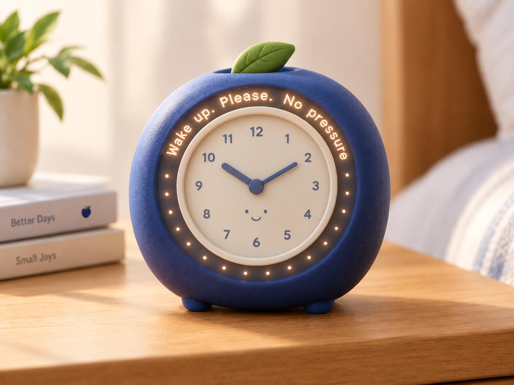

SnoozeBerry
The alarm clock that gets politer the longer you ignore it.
Wake up. Please. No pressure.

How It Works
The first alarm is firm and normal. Each snooze makes it gentler:
snooze 1 is "Good Morning!", snooze 3 is "Whenever you're ready,
no rush" and by snooze 7 it's quietly apologising for bothering you.
The twist: after the 9th snooze it gives up and says "I believe in you,"
then plays one sad violin note.
Features
- Escalating politeness engine, nine distinct tone levels
- Available in three berries: Blueberry, Strawberry and Cranberry
- One sad violin note, built in
- Emotionally supportive, structurally useless
Pricing & Availability
| Berry |
Price |
Availability |
| Blueberry |
R647 |
In Stock |
| Strawberry |
R670 |
Sold Out |
| Cranberry |
R700 |
Sold Out |
What Our Customers Say
- "I've been late to work every day since I bought it. 10/10." (Thabo, Pretoria)
- "It said 'I believe in you' and I cried a little. Then I went back to sleep." (Lerato, Durban)
- "My boss asked why I'm always late. I showed him the clock. He bought one too." (Sipho, Cape Town)